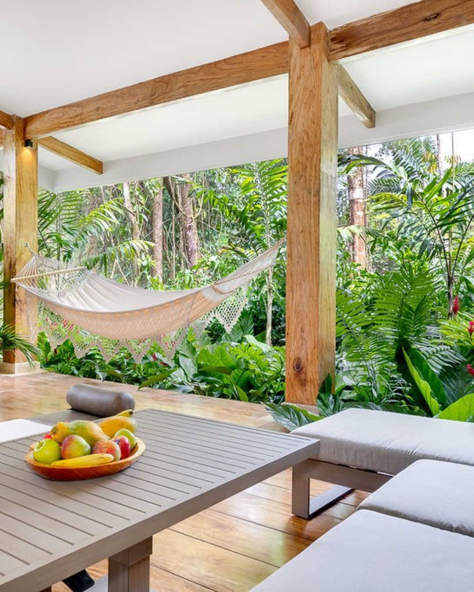
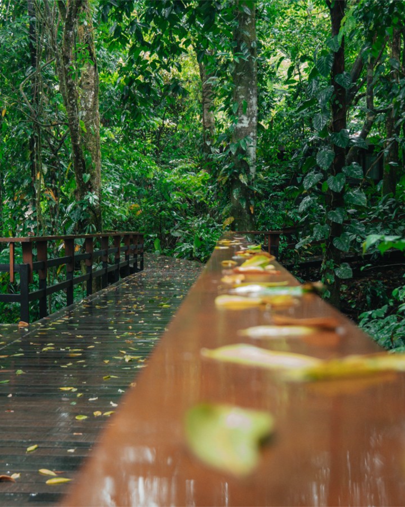
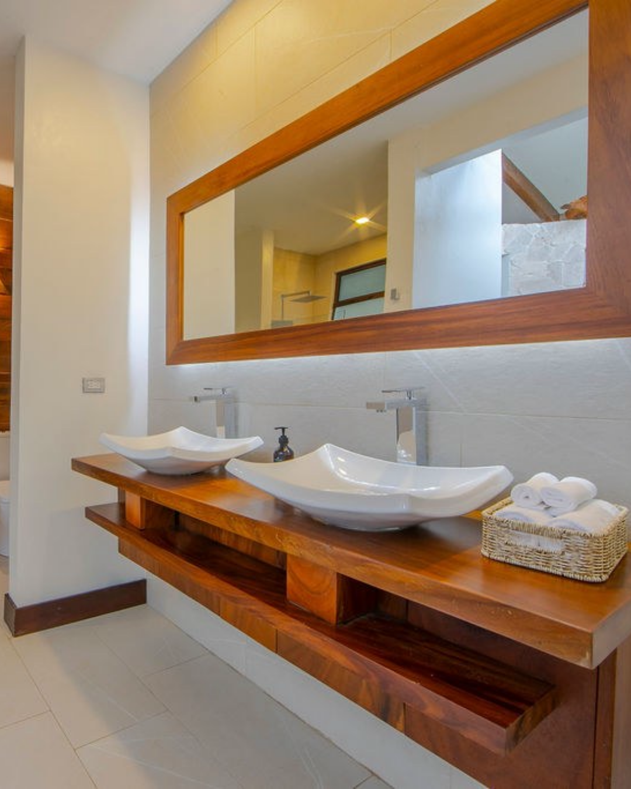
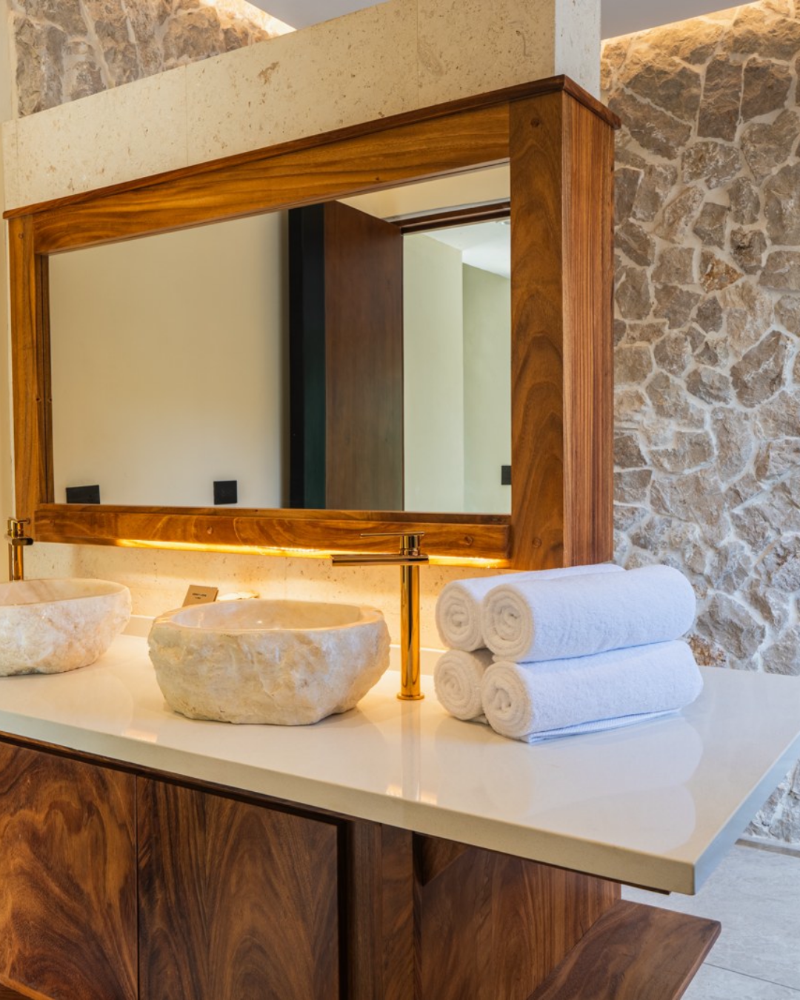
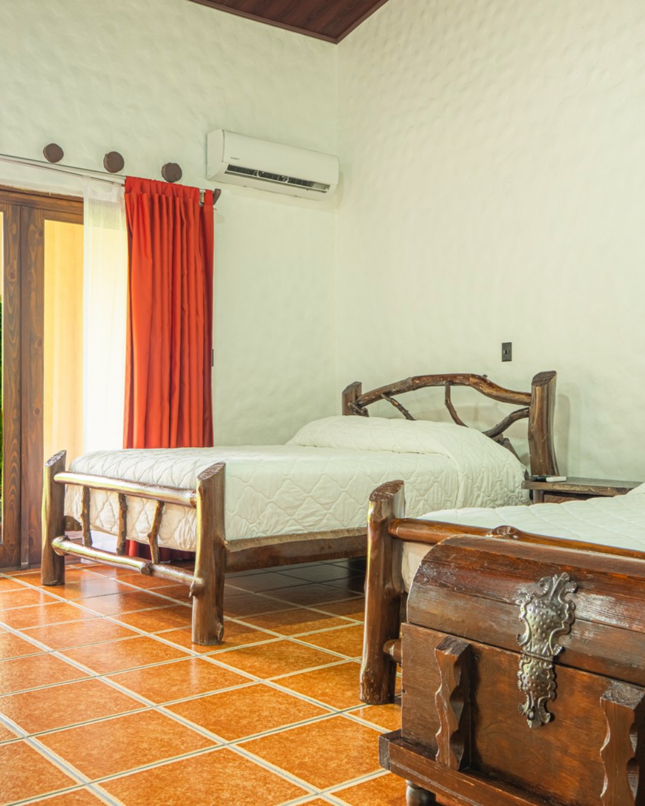
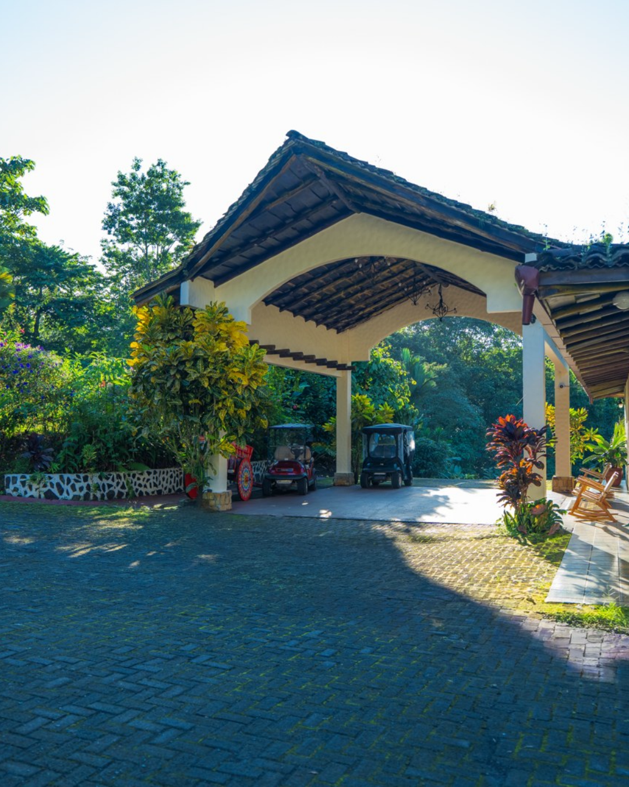

B01 · 2026-11-09


Blog: Three Ways to Share the Rainforest Without Filling Every Hour
Plan a couples stay at Chachagua with a guided nature walk, yoga, and coffee and cacao, leaving time to rest between experiences.

Rainforest Resorts · Content proposal
Chachagua Rainforest Resort & Hot Springs
Arenal Rainforest Resort
November & December 2026 · English First
4 blogs · EN/ES24 bilingual posts8 snippets1 newsletter · EN/ES20 Meta concepts

Six organic posts per hotel per month. Blog snippets are additional. Dates are proposed, not scheduled.
Calendar CSV · Strategy & production notes
| ID | Proposed date | Hotel / channel | Piece |
|---|---|---|---|
| CH01 | 2026-11-04 | Chachagua · FB/IG | An afternoon worth keeping |
| AR01 | 2026-11-05 | Arenal · FB/IG | A new way to plan Arenal |
| CH02 | 2026-11-07 | Chachagua · FB/IG | One trail, different discoveries |
| B01 | 2026-11-09 | Chachagua Blog · EN/ES | Three Ways to Share the Rainforest Without Filling Every Hour |
| AR02 | 2026-11-10 | Arenal · FB/IG | An adventure you want to share |
| B01-S1 | 2026-11-10 | Blog promotion | Read B01 |
| CH03 | 2026-11-12 | Chachagua · FB/IG | A perspective you choose together |
| AR03 | 2026-11-14 | Arenal · FB/IG | Choose the category, understand the conditions |
| B01-S2 | 2026-11-15 | Blog promotion | Read B01 |
| CH04 | 2026-11-16 | Chachagua · FB/IG | A question behind the chocolate |
| AR04 | 2026-11-19 | Arenal · FB/IG | Cacao and curiosity, with clear arrangements |
| CH05 | 2026-11-21 | Chachagua · FB/IG | Together, with room for yourselves |
| B02 | 2026-11-23 | Chachagua Blog · EN/ES | A Trip With Friends That Leaves Room for Different Paces |
| AR05 | 2026-11-24 | Arenal · FB/IG | Planning you can share |
| B02-S1 | 2026-11-24 | Blog promotion | Read B02 |
| CH06 | 2026-11-27 | Chachagua · FB/IG | Make room for a pause |
| AR06 | 2026-11-28 | Arenal · FB/IG | Share your attention to the landscape |
| B02-S2 | 2026-11-30 | Blog promotion | Read B02 |
| CH07 | 2026-12-03 | Chachagua · FB/IG | The details you return to |
| AR07 | 2026-12-04 | Arenal · FB/IG | Comfort begins with a clear choice |
| B03 | 2026-12-07 | Chachagua Blog · EN/ES | From Cacao to the Trail: Discovering the Rainforest as a Family |
| B03-S1 | 2026-12-08 | Blog promotion | Read B03 |
| CH08 | 2026-12-08 | Chachagua · FB/IG | Learn to look together |
| AR08 | 2026-12-09 | Arenal · FB/IG | An outing chosen for their ages |
| CH09 | 2026-12-12 | Chachagua · FB/IG | A river, another conversation |
| AR09 | 2026-12-13 | Arenal · FB/IG | A day to follow your curiosity |
| B03-S2 | 2026-12-14 | Blog promotion | Read B03 |
| CH10 | 2026-12-17 | Chachagua · FB/IG | The forest at another hour |
| AR10 | 2026-12-18 | Arenal · FB/IG | Two bases, one conversation about the trip |
| B04 | 2026-12-21 | Chachagua Blog · EN/ES | From Rainforest to the Arenal Landscape: Six Nights, Two Perspectives |
| B04-S1 | 2026-12-22 | Blog promotion | Read B04 |
| CH11 | 2026-12-22 | Chachagua · FB/IG | Another pace through the landscape |
| AR11 | 2026-12-23 | Arenal · FB/IG | Give a day to the forest |
| NL01 | 2026-12-23 | Email · EN/ES | Rainforest Resorts Grows With Arenal |
| B04-S2 | 2026-12-28 | Blog promotion | Read B04 |
| CH12 | 2026-12-29 | Chachagua · FB/IG | Begin next year with a question |
| AR12 | 2026-12-30 | Arenal · FB/IG | Start with a conversation |
B01 · 2026-11-09
Plan a couples stay at Chachagua with a guided nature walk, yoga, and coffee and cacao, leaving time to rest between experiences.
B02 · 2026-11-23
Compare canopy, a safari float, and Pocosol for a friends trip based at Chachagua, with room arrangements, transfers, and time to rest.
B03 · 2026-12-07
Explore coffee and cacao, guided walks, and birdwatching at Chachagua, with age-specific planning, comfortable pauses, and clear activity conditions.
B04 · 2026-12-21
Consider six nights across Chachagua and Arenal, with rainforest experiences, room choices, transfer planning, and clear information about staged renovation.
Additional bilingual posts. English article link first; the separate Spanish version remains available from the article preview.
B01-S1 · 2026-11-10 · Chachagua Blog
Review draft · Selected image
A nature walk, yoga, and coffee and cacao. Three ways to share Chachagua without filling every hour. Read how to leave time for the two of you. Full article through the profile link.
Una caminata, yoga y café y cacao. Tres maneras de compartir Chachagua sin llenar cada hora. En el blog contamos cómo distribuirlas y conservar tiempo para ustedes. Artículo completo desde el enlace del perfil.
A nature walk, yoga, and coffee and cacao. Three ways to share Chachagua without filling every hour. Read how to leave time for the two of you. Read the article through this post’s link.
Una caminata, yoga y café y cacao. Tres maneras de compartir Chachagua sin llenar cada hora. En el blog contamos cómo distribuirlas y conservar tiempo para ustedes. Lee el artículo en el enlace de esta publicación.
Link / Enlace · Article preview; CMS link pending
B01-S2 · 2026-11-15 · Chachagua Blog
Review draft · Selected image
Your accommodation is part of the time between experiences, too. Read our couples stay suggestion and begin with the pace you want to share. Full article through the profile link.
El alojamiento también se disfruta entre experiencias. Lee nuestra propuesta de viaje en pareja y empieza por elegir el ritmo que quieren compartir. Artículo completo desde el enlace del perfil.
Your accommodation is part of the time between experiences, too. Read our couples stay suggestion and begin with the pace you want to share. Read the article through this post’s link.
El alojamiento también se disfruta entre experiencias. Lee nuestra propuesta de viaje en pareja y empieza por elegir el ritmo que quieren compartir. Lee el artículo en el enlace de esta publicación.
Link / Enlace · Article preview; CMS link pending
B02-S1 · 2026-11-24 · Chachagua Blog
Review draft · Selected image
One friend wants canopy. Another prefers the river. Read how to compare outings from Chachagua without crowding the programme. Full article through the profile link.
Una persona quiere canopy. Otra prefiere el río. El viaje con amigos puede dejar espacio para ambas. Lee cómo comparar excursiones desde Chachagua sin sobrecargar el programa. Artículo completo desde el enlace del perfil.
One friend wants canopy. Another prefers the river. Read how to compare outings from Chachagua without crowding the programme. Read the article through this post’s link.
Una persona quiere canopy. Otra prefiere el río. El viaje con amigos puede dejar espacio para ambas. Lee cómo comparar excursiones desde Chachagua sin sobrecargar el programa. Lee el artículo en el enlace de esta publicación.
Link / Enlace · Article preview; CMS link pending
B02-S2 · 2026-11-30 · Chachagua Blog
Review draft · Selected image
Before booking for friends, share the decisions: beds, transfers, and personal time. Our new article helps start that conversation. Full article through the profile link.
Antes de reservar para el grupo, hay decisiones que vale la pena compartir: camas, traslados y tiempo propio. Nuestro nuevo artículo reúne ideas para empezar la conversación. Artículo completo desde el enlace del perfil.
Before booking for friends, share the decisions: beds, transfers, and personal time. Our new article helps start that conversation. Read the article through this post’s link.
Antes de reservar para el grupo, hay decisiones que vale la pena compartir: camas, traslados y tiempo propio. Nuestro nuevo artículo reúne ideas para empezar la conversación. Lee el artículo en el enlace de esta publicación.
Link / Enlace · Article preview; CMS link pending
B03-S1 · 2026-12-08 · Chachagua Blog
Review draft · Selected image
Where does chocolate come from? Read how to choose coffee and cacao, trails, and birdwatching at Chachagua around your children’s ages. Full article through the profile link.
¿De dónde viene el chocolate? Esa pregunta puede abrir una experiencia en familia. Lee cómo combinar café y cacao, senderos y aves en Chachagua según las edades de tus hijos. Artículo completo desde el enlace del perfil.
Where does chocolate come from? Read how to choose coffee and cacao, trails, and birdwatching at Chachagua around your children’s ages. Read the article through this post’s link.
¿De dónde viene el chocolate? Esa pregunta puede abrir una experiencia en familia. Lee cómo combinar café y cacao, senderos y aves en Chachagua según las edades de tus hijos. Lee el artículo en el enlace de esta publicación.
Link / Enlace · Article preview; CMS link pending
B03-S2 · 2026-12-14 · Chachagua Blog
Review draft · Selected image
A family holiday is about more than activities. Read our rainforest suggestion with time for questions and rest, and clear participation conditions. Full article through the profile link.
Un viaje familiar no se mide solo en actividades. También cuenta el tiempo para preguntar y descansar. En el blog compartimos una propuesta de bosque con pausas y condiciones claras. Artículo completo desde el enlace del perfil.
A family holiday is about more than activities. Read our rainforest suggestion with time for questions and rest, and clear participation conditions. Read the article through this post’s link.
Un viaje familiar no se mide solo en actividades. También cuenta el tiempo para preguntar y descansar. En el blog compartimos una propuesta de bosque con pausas y condiciones claras. Lee el artículo en el enlace de esta publicación.
Link / Enlace · Article preview; CMS link pending
B04-S1 · 2026-12-22 · Chachagua Blog
Review draft · Selected image
Three nights in the rainforest and three at Arenal: a couples trip idea with separately quoted transfers and clear information about Arenal’s work during 2027. Full article through the profile link.
Tres noches en el bosque y tres en Arenal: una idea para viajar en pareja con dos bases. Lee la propuesta, con traslados por cotizar y obras de Arenal durante 2027 explicadas con claridad. Artículo completo desde el enlace del perfil.
Three nights in the rainforest and three at Arenal: a couples trip idea with separately quoted transfers and clear information about Arenal’s work during 2027. Read the article through this post’s link.
Tres noches en el bosque y tres en Arenal: una idea para viajar en pareja con dos bases. Lee la propuesta, con traslados por cotizar y obras de Arenal durante 2027 explicadas con claridad. Lee el artículo en el enlace de esta publicación.
Link / Enlace · Article preview; CMS link pending
B04-S2 · 2026-12-28 · Chachagua Blog
Review draft · Selected image
Two properties can contribute when each has a purpose. Read about accommodation, experiences, and logistics, including Arenal’s staged renovation during 2027. Full article through the profile link.
Dos propiedades pueden sumar al viaje cuando cada una tiene un propósito. El nuevo artículo compara categorías, experiencias y logística, e informa sobre la renovación de Arenal durante 2027. Artículo completo desde el enlace del perfil.
Two properties can contribute when each has a purpose. Read about accommodation, experiences, and logistics, including Arenal’s staged renovation during 2027. Read the article through this post’s link.
Dos propiedades pueden sumar al viaje cuando cada una tiene un propósito. El nuevo artículo compara categorías, experiencias y logística, e informa sobre la renovación de Arenal durante 2027. Lee el artículo en el enlace de esta publicación.
Link / Enlace · Article preview; CMS link pending
20 concepts, 10 per hotel. Each concept has an English US version, an English European pilot version and a Spanish Costa Rica version. These are separate ads, not bilingual paid captions.
PA-CH-01 · Chachagua
Composition reserved for the exact property or experience. This is a production draft.
There is a holiday between the activities, too. At Chachagua Rainforest Resort & Hot Springs, a Travel Designer helps you choose experiences, accommodation, and time to enjoy together.
Time Together. Explore the resort and plan your visit.
There is a holiday between the activities, too. At Chachagua Rainforest Resort & Hot Springs, a Travel Designer helps you choose experiences, accommodation, and time to enjoy together.
Time Together. Explore the resort and plan your visit.
Entre una experiencia y la siguiente también hay viaje. En Chachagua Rainforest Resort & Hot Springs, un Travel Designer te ayuda a elegir naturaleza, alojamiento y pausas según lo que quieren compartir.
Tiempo para estar juntos. Descubre el resort y diseña tu visita.
PA-CH-02 · Chachagua
Composition reserved for the exact property or experience. This is a production draft.
Your group does not need to want the same thing every hour. Explore regional outings and a base to return to at Chachagua Rainforest Resort & Hot Springs. Confirm activity and transfer arrangements with the team.
Different Paces, One Trip. Explore the resort and plan your visit.
Your group does not need to want the same thing every hour. Explore regional outings and a base to return to at Chachagua Rainforest Resort & Hot Springs. Confirm activity and transfer arrangements with the team.
Different Paces, One Trip. Explore the resort and plan your visit.
El grupo no tiene que querer lo mismo a cada hora. Exploren experiencias externas en la región y un lugar al cual regresar en Chachagua Rainforest Resort & Hot Springs. La logística se confirma con el equipo.
Distintas ideas, un viaje. Descubre el resort y diseña tu visita.
PA-CH-03 · Chachagua

A question can open up the day. Plan nature experiences with Chachagua Rainforest Resort & Hot Springs around your children’s ages and interests. Confirm venue, participation, and transfers before booking.
Bring Your Curiosity. Explore the resort and plan your visit.
A question can open up the day. Plan nature experiences with Chachagua Rainforest Resort & Hot Springs around your children’s ages and interests. Confirm venue, participation, and transfers before booking.
Bring Your Curiosity. Explore the resort and plan your visit.
Una pregunta puede abrir el día. Planea con Chachagua Rainforest Resort & Hot Springs experiencias de naturaleza según las edades e intereses de tu familia. Sede, participación y traslados se confirman antes de reservar.
La curiosidad viene con ustedes. Descubre el resort y diseña tu visita.
PA-CH-04 · Chachagua
Your accommodation is part of the holiday. Explore Chachagua Rainforest Resort & Hot Springs and enquire about category features, availability, and conditions for your travel dates.
Choose Your Place to Return. Explore accommodation and plan your stay.
Your accommodation is part of the holiday. Explore Chachagua Rainforest Resort & Hot Springs and enquire about category features, availability, and conditions for your travel dates.
Choose Your Place to Return. Explore accommodation and plan your stay.
La habitación también forma parte del viaje. Conoce las categorías de Chachagua Rainforest Resort & Hot Springs y consulta características, disponibilidad y condiciones para tus fechas.
Elige cómo quieres regresar. Conoce las categorías y consulta su propuesta.
PA-CH-05 · Chachagua
Dates, travellers, and room arrangements: start with what your group needs. Visit Chachagua Rainforest Resort & Hot Springs and request a proposal with clear accommodation and logistics.
Plan the Group Trip. Explore accommodation and plan your stay.
Dates, travellers, and room arrangements: start with what your group needs. Visit Chachagua Rainforest Resort & Hot Springs and request a proposal with clear accommodation and logistics.
Plan the Group Trip. Explore accommodation and plan your stay.
Fechas, viajeros y distribución de habitaciones: empecemos por lo que su grupo necesita. Visita Chachagua Rainforest Resort & Hot Springs y solicita una propuesta con categorías y logística claras.
Planeemos el viaje del grupo. Conoce las categorías y consulta su propuesta.
PA-CH-06 · Chachagua
Composition reserved for the exact property or experience. This is a production draft.
Some holiday days work beautifully with fewer bookings. Discover Chachagua Rainforest Resort & Hot Springs and start planning Costa Rica with selected experiences and time of your own.
Room for a Pause. Explore the resort and plan your visit.
Some holiday days work beautifully with fewer bookings. Discover Chachagua Rainforest Resort & Hot Springs and start planning Costa Rica with selected experiences and time of your own.
Room for a Pause. Explore the resort and plan your visit.
Hay días que se disfrutan con menos reservas. Descubre Chachagua Rainforest Resort & Hot Springs y empieza a diseñar una visita a Costa Rica con experiencias elegidas y tiempo propio.
Una pausa dentro del viaje. Descubre el resort y diseña tu visita.
PA-CH-07 · Chachagua
Composition reserved for the exact property or experience. This is a production draft.
Canopy or a nature outing: choose what actually interests your group. Enquire through Chachagua Rainforest Resort & Hot Springs about external experiences, participation, and transport.
Something to Share. Explore the resort and plan your visit.
Canopy or a nature outing: choose what actually interests your group. Enquire through Chachagua Rainforest Resort & Hot Springs about external experiences, participation, and transport.
Something to Share. Explore the resort and plan your visit.
Canopy o una experiencia de naturaleza: elijan lo que de verdad les interesa. Desde Chachagua Rainforest Resort & Hot Springs, consulta opciones externas, participación y transporte para su grupo.
Una experiencia para compartir. Descubre el resort y diseña tu visita.
PA-CH-08 · Chachagua
Composition reserved for the exact property or experience. This is a production draft.
The coffee and chocolate tour takes place at Chachagua. Ask Chachagua Rainforest Resort & Hot Springs about ages, access, costs, and logistics for your family, and see how it could fit your stay.
Cacao and New Questions. Explore the resort and plan your visit.
The coffee and chocolate tour takes place at Chachagua. Ask Chachagua Rainforest Resort & Hot Springs about ages, access, costs, and logistics for your family, and see how it could fit your stay.
Cacao and New Questions. Explore the resort and plan your visit.
El tour de café y chocolate ocurre en Chachagua. Consulta con Chachagua Rainforest Resort & Hot Springs edades, acceso, costos y logística para tu familia, y descubre cómo puede encajar en la estadía.
Del cacao a nuevas preguntas. Descubre el resort y diseña tu visita.
PA-CH-09 · Chachagua
Tell us your dates and what you want from the trip. Ask Chachagua Rainforest Resort & Hot Springs for a proposal with accommodation and stay conditions confirmed for you.
Plan Your Next Stay. Explore accommodation and plan your stay.
Tell us your dates and what you want from the trip. Ask Chachagua Rainforest Resort & Hot Springs for a proposal with accommodation and stay conditions confirmed for you.
Plan Your Next Stay. Explore accommodation and plan your stay.
Cuéntanos sus fechas y lo que esperan del viaje. En Chachagua Rainforest Resort & Hot Springs, consulta una propuesta con la categoría y las condiciones de estadía confirmadas para ustedes.
Tu próxima visita, con detalles claros. Conoce las categorías y consulta su propuesta.
PA-CH-10 · Chachagua
Your 2027 trip can begin with a conversation. Visit Chachagua Rainforest Resort & Hot Springs and enquire about availability, accommodation, and conditions to turn the idea into a clear proposal.
Start With Your Dates. Explore accommodation and plan your stay.
Your 2027 trip can begin with a conversation. Visit Chachagua Rainforest Resort & Hot Springs and enquire about availability, accommodation, and conditions to turn the idea into a clear proposal.
Start With Your Dates. Explore accommodation and plan your stay.
El viaje de 2027 puede empezar con una conversación. Visita Chachagua Rainforest Resort & Hot Springs y consulta disponibilidad, categoría y condiciones para convertir la idea en una propuesta concreta.
Empecemos por sus fechas. Conoce las categorías y consulta su propuesta.
PA-AR-01 · Arenal

Composition reserved for the exact property or experience. This is a production draft.
There is a holiday between the activities, too. At Arenal Rainforest Resort, a Travel Designer helps you choose experiences, accommodation, and time to enjoy together. Arenal is being renewed in stages during 2027; work may cause noise or changes to areas and services. Confirm your category and stay conditions.
Time Together. Explore the resort and plan your visit. Arenal: work continues in 2027 and may cause noise or changes. Confirm conditions.
There is a holiday between the activities, too. At Arenal Rainforest Resort, a Travel Designer helps you choose experiences, accommodation, and time to enjoy together. Arenal is being renewed in stages during 2027; work may cause noise or changes to areas and services. Confirm your category and stay conditions.
Time Together. Explore the resort and plan your visit. Arenal: work continues in 2027 and may cause noise or changes. Confirm conditions.
Entre una experiencia y la siguiente también hay viaje. En Arenal Rainforest Resort, un Travel Designer te ayuda a elegir naturaleza, alojamiento y pausas según lo que quieren compartir. Arenal continúa en renovación por etapas durante 2027; las obras pueden generar ruido o cambios en áreas y servicios. Consulta categoría y condiciones para tus fechas.
Tiempo para estar juntos. Descubre el resort y diseña tu visita. Arenal: obras durante 2027; pueden generar ruido o cambios. Consulta condiciones.
PA-AR-02 · Arenal
Composition reserved for the exact property or experience. This is a production draft.
Your group does not need to want the same thing every hour. Explore regional outings and a base to return to at Arenal Rainforest Resort. Confirm activity and transfer arrangements with the team. Arenal is being renewed in stages during 2027; work may cause noise or changes to areas and services. Confirm your category and stay conditions.
Different Paces, One Trip. Explore the resort and plan your visit. Arenal: work continues in 2027 and may cause noise or changes. Confirm conditions.
Your group does not need to want the same thing every hour. Explore regional outings and a base to return to at Arenal Rainforest Resort. Confirm activity and transfer arrangements with the team. Arenal is being renewed in stages during 2027; work may cause noise or changes to areas and services. Confirm your category and stay conditions.
Different Paces, One Trip. Explore the resort and plan your visit. Arenal: work continues in 2027 and may cause noise or changes. Confirm conditions.
El grupo no tiene que querer lo mismo a cada hora. Exploren experiencias externas en la región y un lugar al cual regresar en Arenal Rainforest Resort. La logística se confirma con el equipo. Arenal continúa en renovación por etapas durante 2027; las obras pueden generar ruido o cambios en áreas y servicios. Consulta categoría y condiciones para tus fechas.
Distintas ideas, un viaje. Descubre el resort y diseña tu visita. Arenal: obras durante 2027; pueden generar ruido o cambios. Consulta condiciones.
PA-AR-03 · Arenal
A question can open up the day. Plan nature experiences with Arenal Rainforest Resort around your children’s ages and interests. Confirm venue, participation, and transfers before booking. Arenal is being renewed in stages during 2027; work may cause noise or changes to areas and services. Confirm your category and stay conditions. Birdwatching takes place at Chachagua, outside Arenal.
Bring Your Curiosity. Explore the resort and plan your visit. Arenal: work continues in 2027 and may cause noise or changes. Confirm conditions.
A question can open up the day. Plan nature experiences with Arenal Rainforest Resort around your children’s ages and interests. Confirm venue, participation, and transfers before booking. Arenal is being renewed in stages during 2027; work may cause noise or changes to areas and services. Confirm your category and stay conditions. Birdwatching takes place at Chachagua, outside Arenal.
Bring Your Curiosity. Explore the resort and plan your visit. Arenal: work continues in 2027 and may cause noise or changes. Confirm conditions.
Una pregunta puede abrir el día. Planea con Arenal Rainforest Resort experiencias de naturaleza según las edades e intereses de tu familia. Sede, participación y traslados se confirman antes de reservar. Arenal continúa en renovación por etapas durante 2027; las obras pueden generar ruido o cambios en áreas y servicios. Consulta categoría y condiciones para tus fechas. La experiencia de aves se realiza en Chachagua, fuera de Arenal.
La curiosidad viene con ustedes. Descubre el resort y diseña tu visita. Arenal: obras durante 2027; pueden generar ruido o cambios. Consulta condiciones.
PA-AR-04 · Arenal

Your accommodation is part of the holiday. Explore Arenal Rainforest Resort and enquire about category features, availability, and conditions for your travel dates. Arenal is being renewed in stages during 2027; work may cause noise or changes to areas and services. Confirm your category and stay conditions. Image: a detail of One Bedroom Vista Arenal.
Choose Your Place to Return. Explore accommodation and plan your stay. Arenal: work continues in 2027 and may cause noise or changes. Confirm conditions.
Your accommodation is part of the holiday. Explore Arenal Rainforest Resort and enquire about category features, availability, and conditions for your travel dates. Arenal is being renewed in stages during 2027; work may cause noise or changes to areas and services. Confirm your category and stay conditions. Image: a detail of One Bedroom Vista Arenal.
Choose Your Place to Return. Explore accommodation and plan your stay. Arenal: work continues in 2027 and may cause noise or changes. Confirm conditions.
La habitación también forma parte del viaje. Conoce las categorías de Arenal Rainforest Resort y consulta características, disponibilidad y condiciones para tus fechas. Arenal continúa en renovación por etapas durante 2027; las obras pueden generar ruido o cambios en áreas y servicios. Consulta categoría y condiciones para tus fechas. Imagen: detalle de One Bedroom Vista Arenal.
Elige cómo quieres regresar. Conoce las categorías y consulta su propuesta. Arenal: obras durante 2027; pueden generar ruido o cambios. Consulta condiciones.
PA-AR-05 · Arenal
Dates, travellers, and room arrangements: start with what your group needs. Visit Arenal Rainforest Resort and request a proposal with clear accommodation and logistics. Arenal is being renewed in stages during 2027; work may cause noise or changes to areas and services. Confirm your category and stay conditions. Image: a detail of One Bedroom Vista Arenal.
Plan the Group Trip. Explore accommodation and plan your stay. Arenal: work continues in 2027 and may cause noise or changes. Confirm conditions.
Dates, travellers, and room arrangements: start with what your group needs. Visit Arenal Rainforest Resort and request a proposal with clear accommodation and logistics. Arenal is being renewed in stages during 2027; work may cause noise or changes to areas and services. Confirm your category and stay conditions. Image: a detail of One Bedroom Vista Arenal.
Plan the Group Trip. Explore accommodation and plan your stay. Arenal: work continues in 2027 and may cause noise or changes. Confirm conditions.
Fechas, viajeros y distribución de habitaciones: empecemos por lo que su grupo necesita. Visita Arenal Rainforest Resort y solicita una propuesta con categorías y logística claras. Arenal continúa en renovación por etapas durante 2027; las obras pueden generar ruido o cambios en áreas y servicios. Consulta categoría y condiciones para tus fechas. Imagen: detalle de One Bedroom Vista Arenal.
Planeemos el viaje del grupo. Conoce las categorías y consulta su propuesta. Arenal: obras durante 2027; pueden generar ruido o cambios. Consulta condiciones.
PA-AR-06 · Arenal
Composition reserved for the exact property or experience. This is a production draft.
Some holiday days work beautifully with fewer bookings. Discover Arenal Rainforest Resort and start planning Costa Rica with selected experiences and time of your own. Arenal is being renewed in stages during 2027; work may cause noise or changes to areas and services. Confirm your category and stay conditions.
Room for a Pause. Explore the resort and plan your visit. Arenal: work continues in 2027 and may cause noise or changes. Confirm conditions.
Some holiday days work beautifully with fewer bookings. Discover Arenal Rainforest Resort and start planning Costa Rica with selected experiences and time of your own. Arenal is being renewed in stages during 2027; work may cause noise or changes to areas and services. Confirm your category and stay conditions.
Room for a Pause. Explore the resort and plan your visit. Arenal: work continues in 2027 and may cause noise or changes. Confirm conditions.
Hay días que se disfrutan con menos reservas. Descubre Arenal Rainforest Resort y empieza a diseñar una visita a Costa Rica con experiencias elegidas y tiempo propio. Arenal continúa en renovación por etapas durante 2027; las obras pueden generar ruido o cambios en áreas y servicios. Consulta categoría y condiciones para tus fechas.
Una pausa dentro del viaje. Descubre el resort y diseña tu visita. Arenal: obras durante 2027; pueden generar ruido o cambios. Consulta condiciones.
PA-AR-07 · Arenal
Composition reserved for the exact property or experience. This is a production draft.
Canopy or a nature outing: choose what actually interests your group. Enquire through Arenal Rainforest Resort about external experiences, participation, and transport. Arenal is being renewed in stages during 2027; work may cause noise or changes to areas and services. Confirm your category and stay conditions.
Something to Share. Explore the resort and plan your visit. Arenal: work continues in 2027 and may cause noise or changes. Confirm conditions.
Canopy or a nature outing: choose what actually interests your group. Enquire through Arenal Rainforest Resort about external experiences, participation, and transport. Arenal is being renewed in stages during 2027; work may cause noise or changes to areas and services. Confirm your category and stay conditions.
Something to Share. Explore the resort and plan your visit. Arenal: work continues in 2027 and may cause noise or changes. Confirm conditions.
Canopy o una experiencia de naturaleza: elijan lo que de verdad les interesa. Desde Arenal Rainforest Resort, consulta opciones externas, participación y transporte para su grupo. Arenal continúa en renovación por etapas durante 2027; las obras pueden generar ruido o cambios en áreas y servicios. Consulta categoría y condiciones para tus fechas.
Una experiencia para compartir. Descubre el resort y diseña tu visita. Arenal: obras durante 2027; pueden generar ruido o cambios. Consulta condiciones.
PA-AR-08 · Arenal
Composition reserved for the exact property or experience. This is a production draft.
The coffee and chocolate tour takes place at Chachagua. Ask Arenal Rainforest Resort about ages, access, costs, and logistics for your family, and see how it could fit your stay. Arenal is being renewed in stages during 2027; work may cause noise or changes to areas and services. Confirm your category and stay conditions.
Cacao and New Questions. Explore the resort and plan your visit. Arenal: work continues in 2027 and may cause noise or changes. Confirm conditions.
The coffee and chocolate tour takes place at Chachagua. Ask Arenal Rainforest Resort about ages, access, costs, and logistics for your family, and see how it could fit your stay. Arenal is being renewed in stages during 2027; work may cause noise or changes to areas and services. Confirm your category and stay conditions.
Cacao and New Questions. Explore the resort and plan your visit. Arenal: work continues in 2027 and may cause noise or changes. Confirm conditions.
El tour de café y chocolate ocurre en Chachagua. Consulta con Arenal Rainforest Resort edades, acceso, costos y logística para tu familia, y descubre cómo puede encajar en la estadía. Arenal continúa en renovación por etapas durante 2027; las obras pueden generar ruido o cambios en áreas y servicios. Consulta categoría y condiciones para tus fechas.
Del cacao a nuevas preguntas. Descubre el resort y diseña tu visita. Arenal: obras durante 2027; pueden generar ruido o cambios. Consulta condiciones.
PA-AR-09 · Arenal
Tell us your dates and what you want from the trip. Ask Arenal Rainforest Resort for a proposal with accommodation and stay conditions confirmed for you. Arenal is being renewed in stages during 2027; work may cause noise or changes to areas and services. Confirm your category and stay conditions. Image: a detail of One Bedroom Vista Arenal.
Plan Your Next Stay. Explore accommodation and plan your stay. Arenal: work continues in 2027 and may cause noise or changes. Confirm conditions.
Tell us your dates and what you want from the trip. Ask Arenal Rainforest Resort for a proposal with accommodation and stay conditions confirmed for you. Arenal is being renewed in stages during 2027; work may cause noise or changes to areas and services. Confirm your category and stay conditions. Image: a detail of One Bedroom Vista Arenal.
Plan Your Next Stay. Explore accommodation and plan your stay. Arenal: work continues in 2027 and may cause noise or changes. Confirm conditions.
Cuéntanos sus fechas y lo que esperan del viaje. En Arenal Rainforest Resort, consulta una propuesta con la categoría y las condiciones de estadía confirmadas para ustedes. Arenal continúa en renovación por etapas durante 2027; las obras pueden generar ruido o cambios en áreas y servicios. Consulta categoría y condiciones para tus fechas. Imagen: detalle de One Bedroom Vista Arenal.
Tu próxima visita, con detalles claros. Conoce las categorías y consulta su propuesta. Arenal: obras durante 2027; pueden generar ruido o cambios. Consulta condiciones.
PA-AR-10 · Arenal
Your 2027 trip can begin with a conversation. Visit Arenal Rainforest Resort and enquire about availability, accommodation, and conditions to turn the idea into a clear proposal. Arenal is being renewed in stages during 2027; work may cause noise or changes to areas and services. Confirm your category and stay conditions. Image: a detail of One Bedroom Vista Arenal.
Start With Your Dates. Explore accommodation and plan your stay. Arenal: work continues in 2027 and may cause noise or changes. Confirm conditions.
Your 2027 trip can begin with a conversation. Visit Arenal Rainforest Resort and enquire about availability, accommodation, and conditions to turn the idea into a clear proposal. Arenal is being renewed in stages during 2027; work may cause noise or changes to areas and services. Confirm your category and stay conditions. Image: a detail of One Bedroom Vista Arenal.
Start With Your Dates. Explore accommodation and plan your stay. Arenal: work continues in 2027 and may cause noise or changes. Confirm conditions.
El viaje de 2027 puede empezar con una conversación. Visita Arenal Rainforest Resort y consulta disponibilidad, categoría y condiciones para convertir la idea en una propuesta concreta. Arenal continúa en renovación por etapas durante 2027; las obras pueden generar ruido o cambios en áreas y servicios. Consulta categoría y condiciones para tus fechas. Imagen: detalle de One Bedroom Vista Arenal.
Empecemos por sus fechas. Conoce las categorías y consulta su propuesta. Arenal: obras durante 2027; pueden generar ruido o cambios. Consulta condiciones.
US$6,000 total
US$3,000 per hotel across November–December. US$1,500 per hotel each month.
| Market | Language | Share | Per hotel / month | Total · both hotels |
|---|---|---|---|---|
| United States | EN | 60% | US$900 | US$3,600 |
| Europe · United Kingdom pilot | EN | 25% | US$375 | US$1,500 |
| Costa Rica | ES | 15% | US$225 | US$900 |
Paid personas
Couples 50% · Friends 30% · Families 20% · Solo 0%.
Proposed creative allocation, not measured booking shares. The UK is the initial European pilot; other countries require demand and language review. Do not fragment this budget into every combination of country, persona and funnel stage.
Begin with prospecting. Consider remarketing only when eligible audiences and delivery volume support it, up to 20% within each market. Do not force a tiny Costa Rica remarketing ad set.
Usa «Anotar» para señalar fotos, zonas de una foto o fragmentos de texto. Puedes agrupar varios elementos en un comentario. Las burbujas se comparten con la vista local. Escribe tu nombre para identificar la revisión y comparte este enlace únicamente con el equipo de revisión.
Strategy, scope and production notes · Keyword research status
Organic posts · English First
English caption, three dashes, then Spanish. Hotel logos and original brand palettes stay with the creative; STRATEGIA frames the proposal.
CH01 · 2026-11-04 · Chachagua
Review draft · 4:5 & 9:16 prepared · Visual review pending

View Facebook Story · 9:16
Post: An afternoon worth keeping
Couples · Accommodation · English first / Español después
Instagram
The next plan can wait. Choose accommodation you will enjoy between experiences, too. Explore Chachagua’s categories through the profile link.
El próximo plan puede esperar un poco. Elijan un alojamiento que también quieran disfrutar entre experiencias. Conozcan las categorías de Chachagua en el enlace del perfil.
Facebook
A terrace, a conversation, and time before choosing the next plan. Your accommodation helps shape a couples trip. Explore Chachagua’s categories and ask which one suits the stay you have in mind.
Una terraza, una conversación y tiempo antes de decidir el siguiente plan. La elección del alojamiento también define cómo se vive el viaje en pareja. Explora las categorías de Chachagua y consulta cuál se ajusta a la estadía que imaginan.
Link / Enlace
Production notes / Notas de producción
Confirmar categoría de terraza; no atribuirla a todos los alojamientos.
Photographs remain subject to category, currency and publication rights checks. Comments are attached to this content ID.
CH02 · 2026-11-07 · Chachagua
Review draft · 4:5 & 9:16 prepared · Visual review pending

View Facebook Story · 9:16
Post: One trail, different discoveries
Friends · On-site experiences · English first / Español después
Instagram
A shared trail. Different details to discover. Ask about Chachagua’s nature walk and leave time to talk about it afterwards.
Un sendero compartido. Distintas cosas por descubrir. Consulten la caminata de naturaleza en Chachagua y dejen espacio para la conversación al volver.
Facebook
Friends do not all notice the same things on a trail. A guided nature walk within Chachagua can bring different interests together. Ask about the route and a suitable pace before planning the day.
No todos ven lo mismo en un sendero. Una caminata guiada dentro de Chachagua puede ser el punto de encuentro de un grupo con distintas curiosidades. Consulta el recorrido y el ritmo adecuados antes de organizar el día.
Link / Enlace
Production notes / Notas de producción
Confirmar recorrido fotografiado, duración y exigencia.
Photographs remain subject to category, currency and publication rights checks. Comments are attached to this content ID.
CH03 · 2026-11-12 · Chachagua
Review draft · Production needed
Produce image or video
Composition reserved for the exact property or experience. This is a production draft.
View Facebook Story · 9:16
Post: A perspective you choose together
Couples · Off-site experiences · English first / Español después
Instagram
A shared adventure starts with something you both want to try. Ask about Ecoglide, an external park in La Fortuna, and arrangements from Chachagua.
Una aventura compartida empieza por elegir algo que ambos quieran vivir. Consulta canopy en Ecoglide, parque externo en La Fortuna, y su logística desde Chachagua.
Facebook
If you both enjoy heights, canopy at Ecoglide could bring another perspective to your visit. This experience takes place at an external park in La Fortuna. Ask about requirements, transfers, and availability for your dates.
Si a ambos les atraen las alturas, canopy en Ecoglide puede sumar otra perspectiva a su visita. La experiencia ocurre en un parque externo en La Fortuna. Nuestro equipo puede ayudarte a consultar requisitos, traslados y disponibilidad para sus fechas.
Link / Enlace
Production notes / Notas de producción
Producir foto real de pareja en Ecoglide; operador y derechos por confirmar.
Photographs remain subject to category, currency and publication rights checks. Comments are attached to this content ID.
CH04 · 2026-11-16 · Chachagua
Review draft · Production needed
Produce image or video
Composition reserved for the exact property or experience. This is a production draft.
View Facebook Story · 9:16
Post: A question behind the chocolate
Families · Culinary experiences · English first / Español después
Instagram
From an ingredient to the next question. Discover coffee and cacao at Chachagua. Ask about participation, tastings, and arrangements for your children’s ages.
Del ingrediente a la pregunta que sigue. Descubran café y cacao en Chachagua con una experiencia adaptada a las edades y condiciones de su familia. Consulta los detalles.
Facebook
Where does something so familiar come from? Chachagua’s coffee and chocolate tour opens a conversation about Costa Rican ingredients and traditions. Share your children’s ages so the team can review participation, tastings, and dietary needs.
¿De dónde viene algo que conocen tan bien? El tour de café y chocolate de Chachagua abre una conversación sobre ingredientes y tradiciones de Costa Rica. Comparte las edades de tus hijos para revisar participación, degustaciones y necesidades alimentarias.
Link / Enlace
Production notes / Notas de producción
Producir café/cacao con familia; validar edades y autorizaciones.
Photographs remain subject to category, currency and publication rights checks. Comments are attached to this content ID.
CH05 · 2026-11-21 · Chachagua
Review draft · 4:5 & 9:16 prepared · Visual review pending
View Facebook Story · 9:16
Post: Together, with room for yourselves
Friends · Accommodation · English first / Español después
Instagram
A terrace for conversation. Room arrangements to confirm for your group. Explore Two Bedroom Villa and enquire about beds, occupancy, and conditions.
La terraza para conversar. La distribución por confirmar para su grupo. Conozcan Two Bedroom Villa y consulten camas, ocupación y condiciones antes de reservar.
Facebook
Planning a friends trip also means deciding how to share space. When enquiring about Two Bedroom Villa, ask about beds, occupancy, and common areas for your actual group. Start with a proposal everyone can understand.
Organizar un viaje de amigos también es decidir cómo van a compartir el espacio. Al consultar Two Bedroom Villa, pide distribución de camas, ocupación y áreas comunes para el grupo real. Empecemos por una propuesta que todos puedan entender.
Link / Enlace
Production notes / Notas de producción
Categoría según carpeta; validar ficha comercial y vigencia.
Photographs remain subject to category, currency and publication rights checks. Comments are attached to this content ID.
CH06 · 2026-11-27 · Chachagua
Review draft · Production needed
Produce image or video
Composition reserved for the exact property or experience. This is a production draft.
View Facebook Story · 9:16
Post: Make room for a pause
Couples · On-site experiences · English first / Español después
Instagram
Move. Breathe. Leave the next hour open. Ask about yoga at Chachagua and session arrangements that suit you.
Moverse. Respirar. Dejar la siguiente hora abierta. Consulten yoga en Chachagua y las condiciones de la sesión para ustedes.
Facebook
Between a walk and your next outing, there can be a pause you choose. Ask about yoga sessions at Chachagua and an option suited to your experience. A holiday can include movement without filling every hour.
Entre una caminata y la próxima excursión también cabe una pausa elegida. Consulta las sesiones de yoga disponibles en Chachagua y cuál se adapta a su nivel. El viaje puede tener movimiento sin que toda la agenda esté ocupada.
Link / Enlace
Production notes / Notas de producción
Producir yoga real; CH-Y no representa esta experiencia.
Photographs remain subject to category, currency and publication rights checks. Comments are attached to this content ID.
CH07 · 2026-12-03 · Chachagua
Review draft · 4:5 & 9:16 prepared · Visual review pending

View Facebook Story · 9:16
Post: The details you return to
Couples · Accommodation · English first / Español después
Instagram
Returning is part of the holiday. A Master Bungalow detail to begin imagining your stay. Enquire about the category and its current conditions.
El regreso también forma parte del viaje. Un detalle de Master Bungalow para empezar a imaginar su estadía. Consulta la categoría y sus condiciones actuales.
Facebook
After a rainforest experience, the place you return to matters too. This bathroom detail comes from the Master Bungalow library. Ask about the category’s current features and how it fits your couples stay.
Después de una experiencia en el bosque, también importa el lugar al que regresan. Este detalle corresponde a la biblioteca de Master Bungalow. Consulta las características actuales de la categoría y cómo encaja con su viaje en pareja.
Link / Enlace
Production notes / Notas de producción
Foto baño Master Bungalow; confirmar restricciones vigentes de edad.
Photographs remain subject to category, currency and publication rights checks. Comments are attached to this content ID.
CH08 · 2026-12-08 · Chachagua
Review draft · 4:5 & 9:16 prepared · Visual review pending
View Facebook Story · 9:16
Post: Learn to look together
Families · Nature experiences · English first / Español después
Instagram
Look at a branch. Wait. Ask a question. Enquire about birdwatching for your family at Chachagua. No promised species; time to discover.
Mirar una rama. Esperar. Hacer una pregunta. Consulta birdwatching para tu familia en Chachagua. Sin prometer especies; con tiempo para descubrir.
Facebook
You do not need to know a bird’s name to begin observing. Ask about guided birdwatching at Chachagua suited to your family’s ages and interests. Wildlife encounters depend on nature; you bring the curiosity.
No hace falta conocer el nombre de un ave para empezar a observar. Consulta una experiencia guiada de aves en Chachagua adecuada para las edades e intereses de tu familia. Los encuentros dependen de la naturaleza; la curiosidad la traen ustedes.
Link / Enlace
Production notes / Notas de producción
Ave sin identificación de especie; revisar edad y horario; no prometer avistamiento.
Photographs remain subject to category, currency and publication rights checks. Comments are attached to this content ID.
CH09 · 2026-12-12 · Chachagua
Review draft · Production needed
Produce image or video
Composition reserved for the exact property or experience. This is a production draft.
View Facebook Story · 9:16
Post: A river, another conversation
Friends · Off-site experiences · English first / Español después
Instagram
Give your attention to the river. Explore a Peñas Blancas safari float, an external outing subject to operating conditions and availability.
Cambiar el paso por la atención al río. Exploren el safari float en Peñas Blancas, una salida externa que se organiza según condiciones y disponibilidad.
Facebook
A safari float on the Peñas Blancas River offers friends another way to observe the landscape. It is an external experience, different from white-water rafting. Ask about the route, participation, and transfer from Chachagua.
El safari float por el río Peñas Blancas propone otra manera de observar el paisaje con amigos. Es una experiencia externa y distinta al rafting. Consulta recorrido, participación y traslado desde Chachagua para decidir si encaja con el grupo.
Link / Enlace
Production notes / Notas de producción
Producir safari float real; no usar rafting como sustituto.
Photographs remain subject to category, currency and publication rights checks. Comments are attached to this content ID.
CH10 · 2026-12-17 · Chachagua
Review draft · 4:5 & 9:16 prepared · Visual review pending
View Facebook Story · 9:16
Post: The forest at another hour
Couples · On-site experiences · English first / Español después
Instagram
The forest changes its rhythm. You can change yours. Ask about Chachagua’s guided night walk. Daytime trail photograph shown for context.
El bosque cambia de momento. Ustedes pueden cambiar el ritmo. Consulta la caminata nocturna guiada de Chachagua. Imagen de sendero diurno como contexto.
Facebook
A guided night walk offers a different time of day to encounter the rainforest. Ask about Chachagua’s schedule and participation conditions. This photograph shows a daytime path for context; the night experience needs its own preparation and photography.
Una caminata nocturna permite acercarse al bosque desde otro momento del día, con acompañamiento guiado. Consulta horarios y condiciones en Chachagua. La imagen muestra un sendero de día: la experiencia nocturna necesita su propia preparación y registro.
Link / Enlace
Production notes / Notas de producción
Producir imagen nocturna; foto contextual diurna identificada; validar recorrido.
Photographs remain subject to category, currency and publication rights checks. Comments are attached to this content ID.
CH11 · 2026-12-22 · Chachagua
Review draft · Production needed
Produce image or video
Composition reserved for the exact property or experience. This is a production draft.
View Facebook Story · 9:16
Post: Another pace through the landscape
Friends · On-site experiences · English first / Español después
Instagram
Another pace for discovering the landscape. Ask about horseback riding at Chachagua and whether its conditions suit each person in your group.
Otro paso para conocer el paisaje. Consulten cabalgata en Chachagua y revisen si sus condiciones encajan con cada persona del grupo.
Facebook
For friends interested in a different shared activity, ask about horseback riding at Chachagua. The team should review previous experience, requirements, and the route for your group. A carefully chosen outing leaves time to enjoy the return.
Para quienes desean compartir una actividad distinta, consulta la cabalgata de Chachagua. El equipo debe revisar experiencia previa, requisitos y recorrido para el grupo. Una salida elegida con criterio deja tiempo para seguir disfrutando juntos al regreso.
Link / Enlace
Production notes / Notas de producción
Producir cabalgata actual; confirmar ruta interna, condiciones y permisos.
Photographs remain subject to category, currency and publication rights checks. Comments are attached to this content ID.
CH12 · 2026-12-29 · Chachagua
Review draft · Production needed
Produce image or video
Composition reserved for the exact property or experience. This is a production draft.
View Facebook Story · 9:16
Post: Begin next year with a question
Couples · Culinary experiences · English first / Español después
Instagram
An idea for 2027: discover coffee and cacao, with time left for the two of you. Let’s discuss your dates and preferred pace.
Una idea para el viaje de 2027: descubrir café y cacao, y conservar tiempo para ustedes. Hablemos de sus fechas y del ritmo que buscan.
Facebook
Think about the trip you want to share in 2027: what would you like to discover without rushing? Coffee and cacao at Chachagua could be a beginning. Share dates and interests so the stay can follow your preferred pace.
Piensen en el viaje que quieren compartir en 2027: ¿qué les gustaría descubrir sin prisa? Café y cacao en Chachagua pueden ser un comienzo. Cuéntanos sus fechas e intereses para diseñar la estadía, sin prometer una agenda igual para todas las parejas.
Link / Enlace
Production notes / Notas de producción
Producir foto actual café/cacao; no promocionar evento de Año Nuevo.
Photographs remain subject to category, currency and publication rights checks. Comments are attached to this content ID.
AR01 · 2026-11-05 · Arenal
Review draft · 4:5 & 9:16 prepared · Visual review pending

View Facebook Story · 9:16
Post: A new way to plan Arenal
Couples · Accommodation · English first / Español después
Instagram
Costa Rica your way, including Arenal. Explore One Bedroom Vista Arenal. Staged renovation and work continue during 2027; confirm your category and stay conditions.
Costa Rica your way, también en Arenal. Descubran One Bedroom Vista Arenal. Renovación por etapas y obras durante 2027: consulten categoría y condiciones para sus fechas.
Facebook
Arenal Rainforest Resort is part of Rainforest Resorts. Explore One Bedroom Vista Arenal and enquire about accommodation for your dates. The resort is being renewed in stages, with work during 2027. Confirm the category and expected conditions before booking.
Arenal Rainforest Resort forma parte de Rainforest Resorts. Conoce One Bedroom Vista Arenal y consulta la categoría disponible para tu viaje. La propiedad avanza en una renovación por etapas, con obras durante 2027; revisa las condiciones previstas antes de confirmar.
Link / Enlace
Production notes / Notas de producción
Baño de categoría según carpeta; confirmar asignación, no promete vista.
Photographs remain subject to category, currency and publication rights checks. Comments are attached to this content ID.
AR02 · 2026-11-10 · Arenal
Review draft · Production needed
Produce image or video
Composition reserved for the exact property or experience. This is a production draft.
View Facebook Story · 9:16
Post: An adventure you want to share
Friends · Off-site experiences · English first / Español después
Instagram
An experience of heights for your group? Ask about Ecoglide from Arenal. External park; participation and transport to confirm. Start with what each person wants to experience.
¿Una experiencia de altura para el grupo? Consulta Ecoglide desde Arenal. Parque externo; participación y traslado por confirmar. La elección empieza con lo que cada uno quiere vivir.
Facebook
A group can enjoy a trip together without choosing the same activity every hour. If canopy interests you, enquire about Ecoglide and arrangements from Arenal Rainforest Resort. It is an external park; requirements, admission, and transport are confirmed separately.
Un grupo puede disfrutar junto sin elegir todas las mismas actividades. Si canopy les interesa, consulta Ecoglide y la logística desde Arenal Rainforest Resort. Es un parque externo: requisitos, entradas y transporte se confirman por separado.
Link / Enlace
Production notes / Notas de producción
Producir Ecoglide; no atribuir parque a Arenal.
Photographs remain subject to category, currency and publication rights checks. Comments are attached to this content ID.
AR03 · 2026-11-14 · Arenal
Review draft · 4:5 & 9:16 prepared · Visual review pending

View Facebook Story · 9:16
Post: Choose the category, understand the conditions
Couples · Accommodation · English first / Español después
Instagram
An informed accommodation choice. Explore Bungalow Arenal and ask about its features. Staged renovation continues during 2027; confirm conditions for your dates.
Una elección con información clara. Conozcan Bungalow Arenal y consulten sus características. Arenal continúa en renovación por etapas durante 2027; revisen las condiciones para sus fechas.
Facebook
Bungalow Arenal and One Bedroom Vista Arenal are different categories. Request photographs and features for the option being quoted. Resort renovation continues in stages during 2027; ask about expected work and operating services for your dates.
Bungalow Arenal y One Bedroom Vista Arenal son categorías distintas. Pide fotografías y características de la opción que se cotiza. La renovación del resort continúa por etapas durante 2027; el equipo debe explicar trabajos y servicios previstos para tu visita.
Link / Enlace
Production notes / Notas de producción
No declarar esta unidad renovada ni capacidad por número visible de camas.
Photographs remain subject to category, currency and publication rights checks. Comments are attached to this content ID.
AR04 · 2026-11-19 · Arenal
Review draft · Production needed
Produce image or video
Composition reserved for the exact property or experience. This is a production draft.
View Facebook Story · 9:16
Post: Cacao and curiosity, with clear arrangements
Families · Culinary experiences · English first / Español después
Instagram
Discover coffee and cacao as a family. The experience takes place at Chachagua: confirm access, transport, ages, and costs from Arenal before booking.
Café y cacao para descubrir en familia. La experiencia ocurre en Chachagua: consulta acceso, transporte, edades y costos desde Arenal antes de reservar.
Facebook
Families staying at Arenal can enquire about the coffee and chocolate tour held at Chachagua. Access, transport, costs, and participation ages require coordination. Belonging to the same hotel family does not make the activity automatically included.
Si tu familia se aloja en Arenal, puede consultar el tour de café y chocolate que se realiza en Chachagua. La visita requiere coordinar acceso, traslado, costos y edades de participación. Compartir familia hotelera no implica que la actividad esté incluida.
Link / Enlace
Production notes / Notas de producción
Producir tour Chachagua; rotular sede externa respecto a Arenal.
Photographs remain subject to category, currency and publication rights checks. Comments are attached to this content ID.
AR05 · 2026-11-24 · Arenal
Review draft · 4:5 & 9:16 prepared · Visual review pending
View Facebook Story · 9:16
Post: Planning you can share
Friends · Accommodation · English first / Español después
Instagram
Make sure everyone understands where they will rest. Ask Arenal about categories for your group. Staged renovation and work continue in 2027; confirm conditions.
Que todos entiendan dónde van a descansar. Consulta categorías y distribución para tu grupo en Arenal. Renovación por etapas y obras durante 2027: condiciones por confirmar para sus fechas.
Facebook
Before allocating rooms among friends, share the number of travellers and preferred sleeping arrangements. Ask Arenal for a proposal with confirmed categories and layouts. Staged renovation continues during 2027; enquire about the conditions for your stay.
Antes de repartir habitaciones entre amigos, compartan cuántos viajan y cómo quieren dormir. Arenal puede preparar una propuesta con categorías y distribución confirmadas. La propiedad continúa en renovación por etapas durante 2027; consulten las condiciones de la estadía.
Link / Enlace
Production notes / Notas de producción
No prometer camas separadas para todo grupo; revisar propuesta.
Photographs remain subject to category, currency and publication rights checks. Comments are attached to this content ID.
AR06 · 2026-11-28 · Arenal
Review draft · Production needed
Produce image or video
Composition reserved for the exact property or experience. This is a production draft.
View Facebook Story · 9:16
Post: Share your attention to the landscape
Couples · Off-site experiences · English first / Español después
Instagram
Two people, a landscape worth noticing. Enquire about a Peñas Blancas safari float and arrangements from Arenal. External experience; wildlife depends on natural conditions.
Dos personas, un paisaje que merece atención. Consulta safari float en Peñas Blancas y su logística desde Arenal. Experiencia externa; fauna sujeta a condiciones naturales.
Facebook
A Peñas Blancas safari float can bring a different kind of pause to a couples trip. Ask about operation and transport from Arenal Rainforest Resort. The experience takes place outside the hotel and does not guarantee particular wildlife sightings.
El safari float en Peñas Blancas puede ser una pausa distinta dentro de un viaje en pareja. Consulta su operación y el traslado desde Arenal Rainforest Resort. La experiencia ocurre fuera del hotel y no garantiza avistamientos concretos.
Link / Enlace
Production notes / Notas de producción
Producir float real y permiso operador.
Photographs remain subject to category, currency and publication rights checks. Comments are attached to this content ID.
AR07 · 2026-12-04 · Arenal
Review draft · 4:5 & 9:16 prepared · Visual review pending
View Facebook Story · 9:16
Post: Comfort begins with a clear choice
Couples · Accommodation · English first / Español después
Instagram
Notice the details. Ask about the conditions. Explore One Bedroom Vista Arenal. Work during 2027 may cause noise or changes to areas and services; enquire about your category.
Mirar los detalles. Preguntar por las condiciones. Conozcan One Bedroom Vista Arenal. Obras durante 2027 pueden generar ruido o cambios en áreas y servicios; consulta tu categoría.
Facebook
Wood, stone, and details to notice: this image comes from the One Bedroom Vista Arenal library. Ask about the category and its current condition. Staged renovation continues during 2027, with possible noise or changes to areas and services.
Madera, piedra y detalles para mirar de cerca: esta imagen pertenece a la biblioteca de One Bedroom Vista Arenal. Consulta la categoría concreta y su estado actual. Arenal sigue renovándose por etapas durante 2027, con posibles ruidos o cambios en áreas y servicios.
Link / Enlace
Production notes / Notas de producción
Validar categoría, unidad y estado; foto de baño no prueba vista.
Photographs remain subject to category, currency and publication rights checks. Comments are attached to this content ID.
AR08 · 2026-12-09 · Arenal
Review draft · 4:5 & 9:16 prepared · Visual review pending
View Facebook Story · 9:16
Post: An outing chosen for their ages
Families · Nature experiences · English first / Español después
Instagram
Let curiosity help shape the trip. Ask about birdwatching at Chachagua from Arenal. Confirm ages, access, and transport. Outside Arenal; no guaranteed sightings.
La curiosidad también puede guiar el viaje. Consulta aves en Chachagua desde Arenal, con edades, acceso y traslado por confirmar. Experiencia fuera de Arenal; sin avistamientos garantizados.
Facebook
Birdwatching at Chachagua is an experience to enquire about while staying at Arenal. The team should review ages, timing, and family transport. The photograph is contextual; no particular species is promised during the outing.
La observación de aves en Chachagua es una experiencia para consultar también si se alojan en Arenal. El equipo debe revisar edades, horario y transporte para la familia. La fotografía es contextual; ninguna especie se promete durante el recorrido.
Link / Enlace
Production notes / Notas de producción
Sede Chachagua expresamente indicada; validar idoneidad de edad.
Photographs remain subject to category, currency and publication rights checks. Comments are attached to this content ID.
AR09 · 2026-12-13 · Arenal
Review draft · Production needed
Produce image or video
Composition reserved for the exact property or experience. This is a production draft.
View Facebook Story · 9:16
Post: A day to follow your curiosity
Solo travellers · Off-site experiences · English first / Español después
Instagram
Your curiosity, a day with space. Ask about Pocosol from Arenal. Confirm minimum group size, transport, and route. External experience; organic content only.
Tu curiosidad, un día con espacio. Consulta Pocosol desde Arenal y confirma grupo mínimo, transporte y recorrido. Experiencia externa; pieza exclusivamente orgánica.
Facebook
Travelling independently and interested in giving a day to the forest? Enquire about the Pocosol expedition from Arenal. Confirm availability, minimum participants, and transport. A guided outing can be planned around what you would like to discover.
Si viajas por tu cuenta y quieres dedicar tiempo al bosque, consulta la expedición a Pocosol desde Arenal. El equipo debe confirmar disponibilidad, mínimo de participantes y transporte. Una salida guiada puede organizarse alrededor de lo que más te interesa conocer.
Link / Enlace
Production notes / Notas de producción
Producir Pocosol; no reutilizar ni impulsar como anuncio pagado.
Photographs remain subject to category, currency and publication rights checks. Comments are attached to this content ID.
AR10 · 2026-12-18 · Arenal
Review draft · 4:5 & 9:16 prepared · Visual review pending
View Facebook Story · 9:16
Post: Two bases, one conversation about the trip
Couples · Accommodation · English first / Español después
Instagram
Two bases for your next visit? Let’s discuss Chachagua and Arenal. Combined stay subject to quotation; Arenal renovation continues during 2027. Confirm categories and logistics.
¿Dos bases para su próxima visita? Conversemos sobre Chachagua y Arenal. Estadía combinada por cotizar; Arenal continúa en renovación durante 2027. Categorías y logística por confirmar.
Facebook
Three nights at Chachagua and three at Arenal could be an idea for sharing the forest and another perspective of the region. This is a proposal to quote. Work continues at Arenal during 2027; confirm accommodation, conditions, and transport.
Tres noches en Chachagua y tres en Arenal pueden ser una idea para compartir bosque y otra perspectiva de la región. Es una propuesta por cotizar. Arenal continúa con obras durante 2027; consulta categorías, condiciones y traslado antes de decidir.
Link / Enlace
Production notes / Notas de producción
Ejemplo editorial; no paquete ni traslado incluido.
Photographs remain subject to category, currency and publication rights checks. Comments are attached to this content ID.
AR11 · 2026-12-23 · Arenal
Review draft · Production needed
Produce image or video
Composition reserved for the exact property or experience. This is a production draft.
View Facebook Story · 9:16
Post: Give a day to the forest
Friends · Off-site experiences · English first / Español después
Instagram
A day for looking more closely. Ask about Pocosol from Arenal and review the route, walking demands, and transport. No need for another excursion on returning.
Un día para mirar con más atención. Consulten Pocosol desde Arenal y revisen recorrido, esfuerzo y traslado para su grupo. No hace falta añadir otra excursión al regreso.
Facebook
If Pocosol interests your friends, give it a place of its own in the programme. Ask about the route, physical demands, and total time from Arenal. The expedition is outside the resort; an informed booking leaves room to rest afterwards.
Si al grupo le interesa Pocosol, denle un lugar propio en el programa. Consulta recorrido, exigencia y tiempo total desde Arenal. La expedición ocurre fuera del resort; una reserva informada también deja tiempo para descansar después.
Link / Enlace
Production notes / Notas de producción
Producir Pocosol; operación y traslados por confirmar.
Photographs remain subject to category, currency and publication rights checks. Comments are attached to this content ID.
AR12 · 2026-12-30 · Arenal
Review draft · 4:5 & 9:16 prepared · Visual review pending

View Facebook Story · 9:16
Post: Start with a conversation
Couples · On-site experiences · English first / Español después
Instagram
Your next trip starts with listening. Share dates and interests with an Arenal Travel Designer. Staged renovation and work continue during 2027; confirm conditions before booking.
El próximo viaje empieza por escucharlos. Compartan fechas e intereses con un Travel Designer de Arenal. Renovación por etapas y obras durante 2027: consulta condiciones antes de confirmar.
Facebook
For your 2027 trip, tell us what interests you and how much time you want to rest. A Travel Designer helps arrange the proposal. Staged renovation continues at Arenal during 2027; confirm the category and expected conditions before booking.
Para el viaje de 2027, empieza por contarnos qué les interesa y cuánto tiempo quieren descansar. Un Travel Designer ayuda a organizar la propuesta. Arenal continúa en renovación por etapas durante 2027; el equipo te informará sobre categoría y condiciones previstas antes de confirmar.
Link / Enlace
Production notes / Notas de producción
Imagen entrada, sin personal: producir asesoría real; in house es atención, no excursión.
Photographs remain subject to category, currency and publication rights checks. Comments are attached to this content ID.